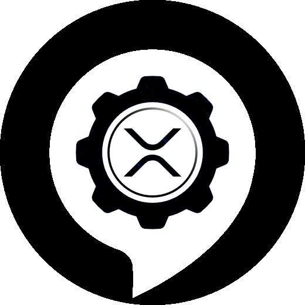

<div class="flex layout-column">
  <div class="layout-row flex hide-xs">
    <div class="align-center-center mat-elevation-z4 app-shell-topbar-primary">
      <a [routerLink]="['/']" class="align-center-center">
        
      </a>
    </div>
    <div class="flex layout-column">
      <mat-toolbar class="layout-row mat-elevation-z4 app-shell-topbar-primary" color="primary">
        <mat-toolbar-row class="layout-row">
          <div class="layout-row gap-03" style="align-items: center;">
            <a [routerLink]="['/']" class="align-center-center gap-10" style="text-decoration: none; color: white;">
              <div class="title">{{title}}</div>
            </a>
          </div>
          <span class="spacer"></span>
          <div>
            <span class="layout-row align-center-center">
              Support this project:&nbsp;
              <button mat-button matTooltip="Send some Love!" matTooltipPosition="below" (click)="supportViaXumm()" style="padding:0px;">
                
              </button>
            </span>
          </div>
        </mat-toolbar-row>
      </mat-toolbar>
      <mat-toolbar class="mat-elevation-z4 second-toolbar layout-row" color="primary" style="padding-left: 0px">
        <!-- normal menu -->
        <div class="hide-xs">
          <button mat-button [routerLink]="['']" matTooltip="XRPL Transactions">
            <i class="material-icons topbar-menu-icon">mobile_friendly</i> XRPL Transactions
          </button>
          <button mat-button [routerLink]="['/tokens']" matTooltip="Issue your own Token!">
            <i class="material-icons topbar-menu-icon">attach_money</i> XRPL Tokens
          </button>
          <button mat-button [routerLink]="['/xls-14d']" matTooltip="View NFTs on the XRPL!">
            <i class="material-icons topbar-menu-icon">token</i> XLS-14D NFTs
          </button>
          <button mat-button [routerLink]="['/tools']" matTooltip="Tools">
            <i class="material-icons topbar-menu-icon">build</i> XRPL Tools
          </button>
          <!--button mat-button [routerLink]="['/generic-backend']" matTooltip="XRPL Services Generic Backend">
          <i class="material-icons topbar-menu-icon">device_hub</i> Generic Backend
        </button-->
        <button mat-button [routerLink]="['/xrpl-statistics']" matTooltip="XRP Ledger Stats">
          <i class="material-icons topbar-menu-icon">analytics</i> XRPL Stats
        </button>
        <button mat-button [routerLink]="['/statistics']" matTooltip="XRPL Services Website Statistics">
          <i class="material-icons topbar-menu-icon">query_stats</i> Website Statistics
        </button>
        <button mat-button [routerLink]="['/nft-api']" matTooltip="XRPL Services NFT API">
          <i class="material-icons topbar-menu-icon">webhook</i> NFT API
        </button>
      </div>

        <span class="spacer"></span>

      <button mat-icon-button (click)="toggleDarkTheme()">
        <i class="material-icons topbar-menu-icon">{{isDarkTheme ? 'wb_sunny' : 'nights_stay'}}</i>
      </button>
    </mat-toolbar>
  </div>
</div>
<div class="layout-row flex show-xs">
  <div class="flex layout-column">
    <mat-toolbar class="layout-row mat-elevation-z4 app-shell-topbar-primary" color="primary" style="padding-top: 0.3em;">
      <mat-toolbar-row class="layout-row">
        <div class="layout-row gap-03" style="align-items: center;">
          <a [routerLink]="['/']" class="align-center-center gap-10" style="text-decoration: none; color: white;">
            
            <div class="title">{{title}}</div>
          </a>
        </div>
      </mat-toolbar-row>
      <mat-toolbar-row>
        <span class="align-center-center" style="font-size: 0.8em;">
          Support this project:&nbsp;
          <button mat-button matTooltip="Send some Love!" matTooltipPosition="above" (click)="supportViaXumm()" style="padding:0px;">
            
          </button>
        </span>
      </mat-toolbar-row>
    </mat-toolbar>
    <mat-toolbar class="mat-elevation-z4 second-toolbar layout-row" color="primary" style="padding:0px; font-size: 0.5em;">
      <!-- Hamburger Menu für mobile! -->
      <button mat-icon-button [matMenuTriggerFor]="appMenu">
        <i class="material-icons topbar-menu-icon">menu</i>
      </button>
      <mat-menu #appMenu="matMenu" yPosition="below" xPosition="after">
        <button mat-menu-item [ngStyle]="{'color': isDarkTheme?'white':'black' }" [routerLink]="['']">
          <mat-icon class="material-icons">mobile_friendly</mat-icon>
          <span>XRPL Transactions</span>
        </button>
        <button mat-menu-item [ngStyle]="{'color': isDarkTheme?'white':'black' }" [routerLink]="['/tokens']">
          <mat-icon class="material-icons">attach_money</mat-icon>
          <span>XRPL Tokens</span>
        </button>
        <button mat-menu-item [ngStyle]="{'color': isDarkTheme?'white':'black' }" [routerLink]="['/xls-14d']">
          <mat-icon class="material-icons">token</mat-icon>
          <span>XLS-14D NFTs</span>
        </button>
        <button mat-menu-item [ngStyle]="{'color': isDarkTheme?'white':'black' }" [routerLink]="['/tools']">
          <mat-icon class="material-icons">build</mat-icon>
          <span>XRPL Tools</span>
        </button>
        <!--button mat-menu-item [ngStyle]="{'color': isDarkTheme?'white':'black' }" [routerLink]="['/generic-backend']" matTooltip="XRPL Services Generic Backend">
        <mat-icon class="material-icons">device_hub</mat-icon>
        <span>Generic Backend</span>
      </button-->
      <button mat-menu-item [ngStyle]="{'color': isDarkTheme?'white':'black' }" [routerLink]="['/xrpl-statistics']">
        <mat-icon class="material-icons">analytics</mat-icon>
        <span>XRPL Statistics</span>
      </button>
      <button mat-menu-item [ngStyle]="{'color': isDarkTheme?'white':'black' }" [routerLink]="['/statistics']">
        <mat-icon class="material-icons">query_stats</mat-icon>
        <span>Website Statistics</span>
      </button>
      <button mat-menu-item [ngStyle]="{'color': isDarkTheme?'white':'black' }" [routerLink]="['/nft-api']">
        <mat-icon class="material-icons">webhook</mat-icon>
        <span>NFT API</span>
      </button>
    </mat-menu>

    <span class="spacer"></span>
    <button mat-icon-button (click)="toggleDarkTheme()">
      <i class="material-icons topbar-menu-icon">{{isDarkTheme ? 'wb_sunny' : 'nights_stay'}}</i>
    </button>
  </mat-toolbar>
</div>
</div>

@if (!loadingBackend && !backendAvailable) {
  <mat-toolbar class="warning-background layout-row align-center-center" style="font-size: 0.9em; white-space: pre-wrap;">
    <label>Maintenance currently ongoing. Please be patient! Thank you for your understanding!</label>
  </mat-toolbar>
}
</div>